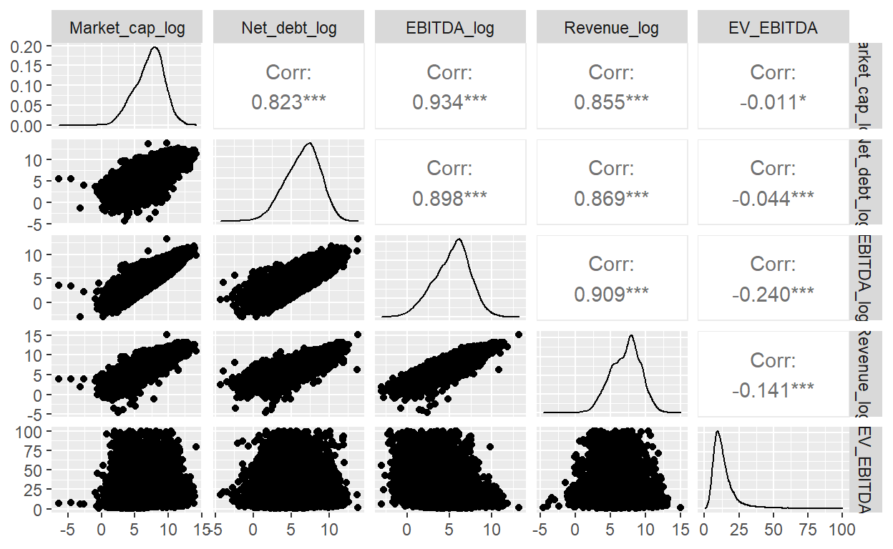
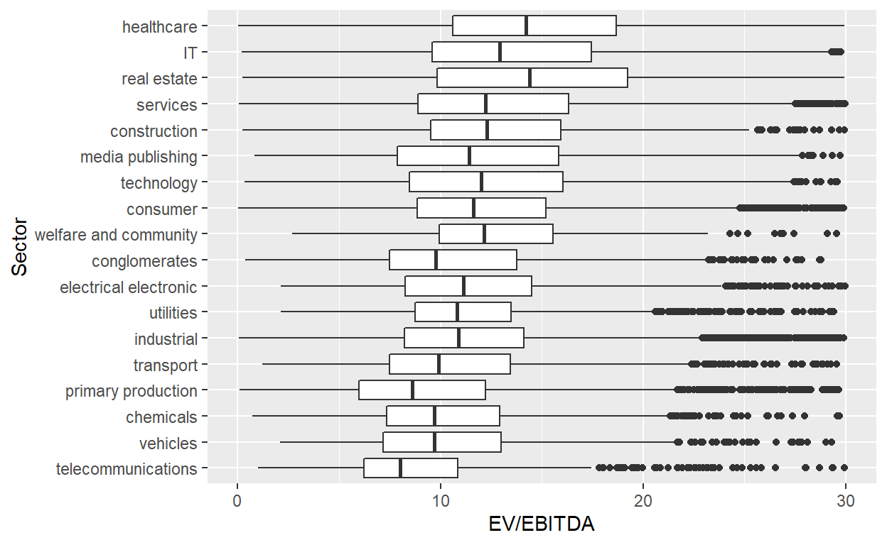
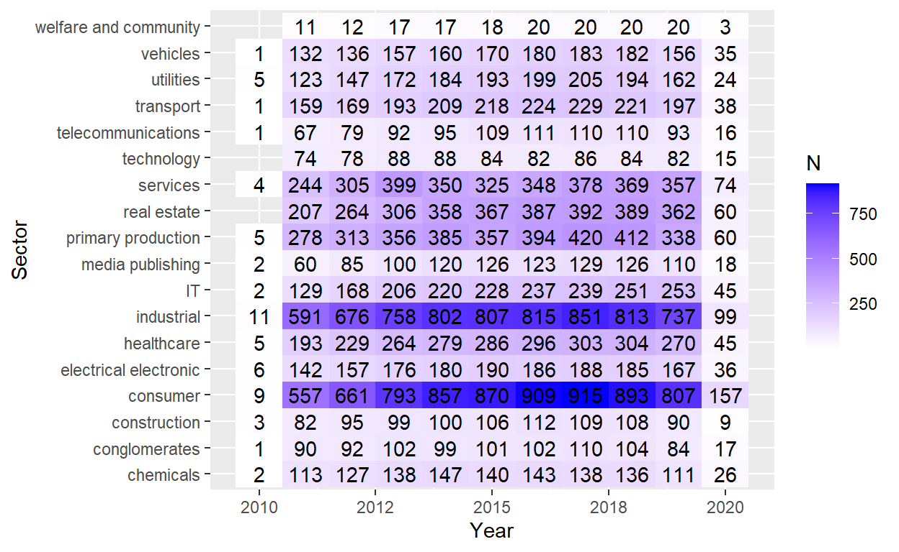
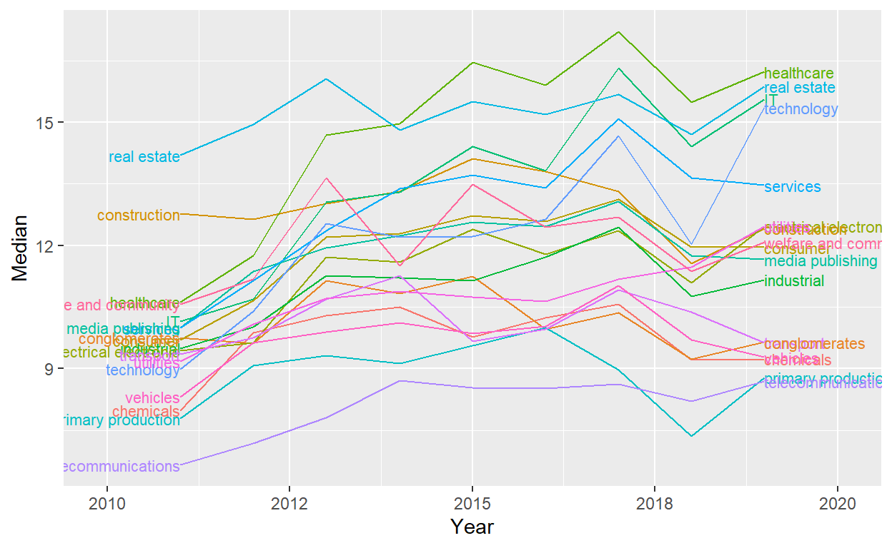
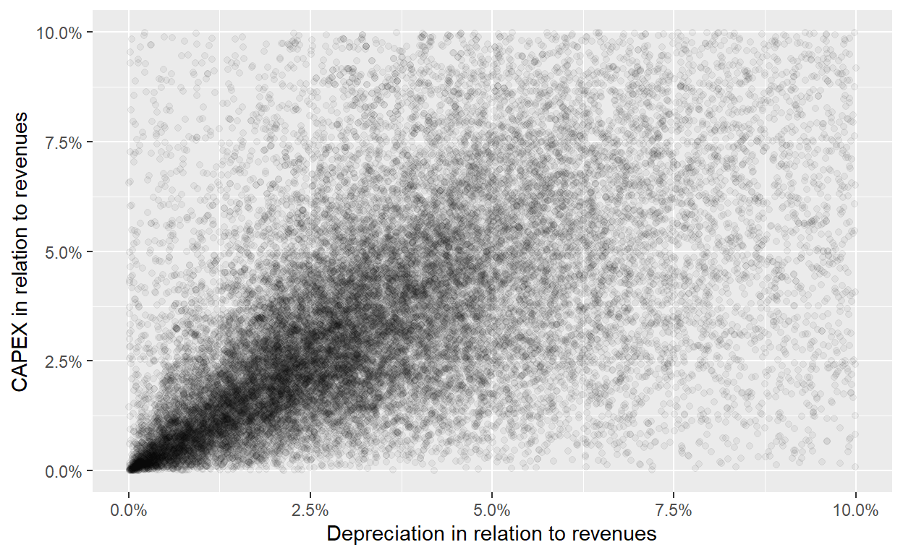
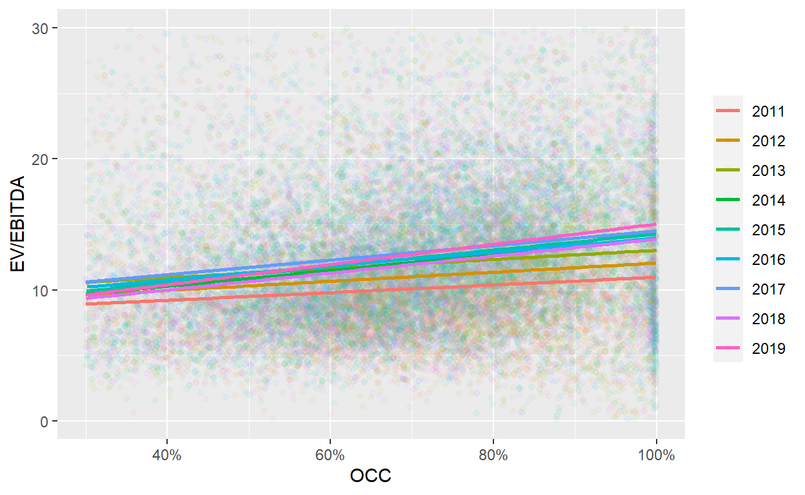

A closer empirical look at the EV/EBITDA multiple.
In the blog post EV/EBITDA valuation multiple: the theory, I derived the EV/EBITDA multiple from a FCFF-DCF model under some simplifying assumptions. In this post, I want to dive deeper into some empirical characteristics of the EV/EBITDA multiple. To do so, I use the RB1 Robur data set available on Quandl, which is not freely available.
In the section “Download and formatting the data”, I describe how I got the data into R. Readers that are only interested in the results can skip this section. As the documentation of the data set is rather extensive, I will not go into too much detail about it in this post (which companies are covered, for how long, etc.).
I downloaded the data from Quandl on 10/24/2020. I struggled to pull all the data directly into one data set with the R package, so I ran a for loop to download the data sets for each individual ticker, which ran half a day. The code is saved below for reference, but there is probably an easier and better way to do this. If you know it, let me know!
library(Quandl)
#You also have to set your personal Quandl key with Quandl.api_key('ENTER YOUR KEY')
library(data.table)
#### Download RB1 full data set
tickers <- as.character(1:9197)
tickers[nchar(tickers)==1] <- paste0("000", tickers[nchar(tickers)==1])
tickers[nchar(tickers)==2] <- paste0("00", tickers[nchar(tickers)==2])
tickers[nchar(tickers)==3] <- paste0("0", tickers[nchar(tickers)==3])
i <- 0
for (ticker in tickers) {
for (str_type in c("INCOME", "CAGR", "SIGNALS", "VALUES",
"FORECAST", "BALANCE", "CASHFLOW")) {
if (i==0) {
str_eval <- paste0("dt_", str_type, "<- as.data.table(Quandl('RB1/", ticker, "_", str_type, "'))")
eval(parse(text=str_eval))
set(eval(parse(text=paste0("dt_", str_type))), j="Ticker", value=ticker)
} else {
tryCatch({
str_eval <- paste0("intDT <- as.data.table(Quandl('RB1/", ticker, "_", str_type, "'))")
eval(parse(text=str_eval))
set(intDT, j="Ticker", value=ticker)
eval(parse(text=paste0("dt_", str_type, "<- rbind(intDT, dt_", str_type, ")")))
}, error=function(e){cat("ERROR :",ticker, conditionMessage(e), "\n")})
}
}
i <- i + 1
}
l_RB1 <- list(dt_BALANCE = dt_BALANCE,
dt_CAGR = dt_CAGR,
dt_CASHFLOW = dt_CASHFLOW,
dt_INCOME = dt_INCOME,
dt_FORECAST = dt_FORECAST,
dt_SIGNALS = dt_SIGNALS,
dt_VALUES = dt_VALUES)
#Change the folder based on your computer set up
save(l_RB1, file="C:/Users/Christoph Jaeckel/Desktop/Quandl/list_RB1.RData")
After this code has run once, I can now load the data easily with the following code. The different tables are saved in a list named l_RB1. In addition, there is a table that links the tickers with the companies, industries, etc.
After inspecting the different data sets, it became clear that dt_VALUE, which seemed the most important initially, is rather useless as it seems to only hold the valuations from 2020, so I could not do an analysis over time. However, fortunately, dt_INCOME includes information about the share price “at the accounting date for each period” as well as the diluted shares outstanding. Hence, I can calculate the market cap. dt_BALANCE has information about the debt and dt_CASHFLOW gives me information about the depreciation and cash. As dt_INCOME also includes operating income (equivalent of EBIT), I can therefore easily calculate the EBITDA. I also merge dt_CAGR, which includes growth rates for companies; however, there is much less coverage so using those inputs will substantially reduce the sample size.
Let’s merge the four data sets together.
### Start with dt_INCOME
intDT <- l_RB1$dt_INCOME
### Merge it with dt_CASHFLOW and dt_BALANCE
setkey(intDT, Ticker, Date)
#dt_CASHFLOW
setkey(l_RB1$dt_CASHFLOW, Ticker, Date)
intDT <- intDT[l_RB1$dt_CASHFLOW]
#dt_BALANCE
setkey(l_RB1$dt_BALANCE, Ticker, Date)
intDT <- intDT[l_RB1$dt_BALANCE]
#dt_CAGR (not required, so that's why you have it outside)
setkey(l_RB1$dt_CAGR, Ticker, Date)
intDT <- l_RB1$dt_CAGR[intDT]
### Finally, get also static data in there
intDT[, Ticker:=as.integer(Ticker)] #Change type of Ticker as it is integer in the DT data set
setkey(intDT, Ticker)
setnames(DT, "company_code", "Ticker")
setkey(DT, Ticker)
DT <- DT[intDT]
marketCap_Arctic <- round(DT[Ticker==8971 & Date==dmy("31122019"), `Share Price at EoP` * `Diluted Shares OS`])
I looked closer into Arctic Paper which has a share currency of SEK and a reference currency of PLN. I confirmed with CapitalIQ that the balance sheet items were in PLN. According the company page on Quandl, the market cap of this company is currently USD 0.07bn. I calculate a market cap of 593 as of 12/31/2019. Note that the stock price didn’t move much in 2020 and that the current SEK/USD FX rate is 0.11. Hence, I would calculate a market cap of 65.23, which is exactly what I find at the company page. The PLN/USD FX rate stands at 0.26 and would therefore not match.
To summarize: It looks like all values are in the reference currency with the exception of the share price, which is in the share currency. I will convert all numbers to a consistent currency in the next section.
In a next step, I make some adjustments to the data set, i.e. rename some columns and calculate some items such as EBITDA. Concretely:
The code to get the FX rate is a bit more complicated. I start by obtaining an FX data set from the Swiss national bank, which is freely available on Quandl. This data set has the dates in the rows and the FX rate of the Swiss francs to other currencies in each column starting at column 2. Some FX rates are scaled by 100, such as SEK or JPY. Fortunately, in these cases, the column header ends with “100”, so I can easily check for it and divide these columns by 100. I then convert each currency to USD and finally bring the data set into the long format.
############################################################################
############################## 1. Rename columns
setnames(DT,
old = c("Operating Income", "Share Price at EoP", "Diluted Shares OS", "End Cash", "Current Assets",
"Cash from Operations", "Cash from Financing", "Cash from Investing"),
new = c("EBIT", "Share_price", "Nr_shares", "Cash_end", "Current_assets",
"OpCF", "FinCF", "InvCF"))
############################################################################
############################## 2. Convert FX rates
#--------------------- a) Get an FX rate matching table
fxDT <- as.data.table(Quandl("SNB/DEVKUM"))
# Only keep end of month data
cols <- c("Date", grep("End of month", names(fxDT), value = TRUE))
fxDT <- fxDT[, ..cols]
# Loop through columns to adjust name and scale
for (j in 2:ncol(fxDT)) {
#If there is a 100, scale FX rate accordingly
col_name <- names(fxDT)[j]
if (substr(col_name, start = nchar(col_name)-2, stop = nchar(col_name))=="100") {
set(fxDT, j=j, value = fxDT[,..j]/100)
#Also, get the currency code
new_col_name <- substr(col_name, start = nchar(col_name)-6, stop = nchar(col_name)-4)
} else {
#If it doesn't end with 100, this looks different
new_col_name <- substr(col_name, start = nchar(col_name)-4, stop = nchar(col_name)-2)
}
setnames(fxDT, old=col_name, new=new_col_name)
}
#Loop again through it to convert to USD
fxUSD <- fxDT$USD
for (j in 2:ncol(fxDT)) {
set(fxDT, j=j, value = fxDT[,..j]/fxUSD)
}
#Add CHF (needed as you get the data from the SNB and hence everything so far was linked to the CHF)
fxDT[, CHF:=1/fxUSD]
#--------------------- b) Melt and merge
fxDT <- melt(fxDT, id.vars="Date")
setkey(fxDT, Date, variable)
#Exclude ARS because the data looks wrong
#ggplot(fxDT[variable=="ARS"], aes(x=Date, y=value)) + geom_line()
fxDT <- fxDT[variable!="ARS"]
### First with share_currency
setkey(DT, Date, share_currency)
DT <- fxDT[DT]
setnames(DT, c("variable", "value"), c("share_currency", "fx_share_CUR_to_USD"))
DT[, Share_price := Share_price * fx_share_CUR_to_USD]
### First with reference_currency
setkey(DT, Date, reference_currency)
DT <- fxDT[DT]
setnames(DT, c("variable", "value"), c("reference_currency", "fx_reference_CUR_to_USD"))
for (cols in c("Revenue", "EBIT", "Net Income exc. extra", "Net Income inc. extra", "OpCF",
"Depreciation", "Capex", "InvCF", "Issuance of Stock", "Issuance of Debt", "FinCF",
"Start Cash", "Cash_end", "Current_assets", "Goodwill", "Intangibles", "Total Assets", "Current Liabilities",
"Long Term Debt", "Total Liabilities", "Shareholder Equity")) {
set(DT, j=cols, value = DT[,..cols] * DT$fx_reference_CUR_to_USD)
}
############################################################################
############################## 3. Calculate EBITDA
DT[, EBITDA := EBIT + Depreciation]
############################################################################
############################## 4. Calculate Net Debt
DT[, Net_debt := `Current Liabilities` + `Long Term Debt` - Cash_end]
############################################################################
############################## 5. Market cap
DT[, Market_cap := Share_price * Nr_shares]
############################################################################
############################## 6. EV/EBITDA multiple
DT[,EV := Market_cap + Net_debt]
DT[,EV_EBITDA := EV/EBITDA]
DT[!is.finite(EV_EBITDA), EV_EBITDA:=NA]
############################################################################
############################## 7. Continent matching
countryDT <- fread("C:/Users/Christoph Jaeckel/Desktop/Quandl/Country_continent_list.csv")
#Get rid of everything after the comma: https://stackoverflow.com/questions/25307899/r-remove-anything-after-comma-from-column
countryDT[, Country_Name:=gsub("(.*),.*", "\\1", Country_Name)]
countryDT <- countryDT[, list(Country_Name, Continent_Name)]
setkey(countryDT, Country_Name)
setkey(DT, country)
DT <- countryDT[DT, allow.cartesian=TRUE]
#Some didn't match, change manually
#DT[is.na(Continent_Name), unique(Country_Name)]
DT[Country_Name=="China inc HK", Continent_Name:="Asia"]
DT[Country_Name=="Falkland Islands", Country_Name:="UK"]
DT[Country_Name=="UK", Continent_Name:="Europe"]
DT[Country_Name=="Russia", Continent_Name:="Asia"]
DT[Country_Name=="USA", Continent_Name:="North America"]
Once we have obtained the data, we can finally look at it. Let’s start by looking at some summary statistics.
library(gtsummary)
# make dataset with a few variables to summarize
trial2 <- trial %>% select(age, grade, response, trt)
tbl_summary(
data=DT[, list(Continent_Name, Market_cap, Net_debt, EBITDA, Revenue, EV_EBITDA)],
by = Continent_Name, # split table by group,
digits = starts_with("EV") ~ 1,
label = list(Market_cap ~ "Market cap", Net_debt ~ "Net debt", EV_EBITDA ~ "EV/EBITDA"),
statistic = all_continuous() ~ "{min} / {median} / {mean} / {max} ({sd})",
missing = "no" # don't list missing data separately
) %>%
add_n() %>% # add column with total number of non-missing observations
modify_header(label = "**Variable**") %>% # update the column header
bold_labels() # %>%
| Variable | N | Africa, N = 1,1461 | Asia, N = 16,8761 | Europe, N = 33,6601 | North America, N = 11,9911 | Oceania, N = 4,8081 | South America, N = 5941 |
|---|---|---|---|---|---|---|---|
| Market cap | 63,098 | 0 / 1,282 / 4,567 / 356,006 (16,874) | 0 / 2,725 / 7,710 / 924,083 (22,174) | 0 / 215 / 3,357 / 1,403,390 (17,101) | 0 / 4,615 / 16,495 / 1,128,825 (46,860) | 0 / 357 / 2,746 / 186,590 (10,749) | 1 / 2,098 / 7,480 / 148,157 (17,496) |
| Net debt | 48,802 | -2,945 / 592 / 1,469 / 334,068 (11,599) | -127,506 / 1,571 / 6,250 / 616,550 (17,992) | -162,770 / 160 / 2,895 / 1,066,106 (20,156) | -51,648 / 2,054 / 6,630 / 1,413,126 (20,466) | -1,183 / 173 / 1,016 / 73,204 (3,245) | 0 / 1,816 / 8,973 / 967,805 (55,408) |
| EBITDA | 60,494 | -745 / 151 / 407 / 6,484 (817) | -3,740 / 384 / 1,380 / 76,832 (4,442) | -24,757 / 26 / 499 / 75,952 (2,301) | -16,690 / 557 / 1,850 / 139,407 (5,048) | -4,956 / 39 / 346 / 36,645 (1,662) | -153 / 340 / 3,176 / 557,907 (30,150) |
| Revenue | 59,826 | 0 / 1,015 / 2,235 / 53,302 (3,433) | 0 / 2,395 / 8,631 / 471,268 (22,306) | -678 / 194 / 3,225 / 484,748 (15,030) | -31 / 3,328 / 10,460 / 510,329 (27,061) | 0 / 188 / 1,400 / 71,330 (5,001) | 0 / 1,481 / 16,988 / 3,317,699 (179,287) |
| EV/EBITDA | 45,380 | -4,301.0 / 10.3 / 6.9 / 614.2 (172.4) | -7,428.6 / 11.1 / 59.6 / 453,332.3 (4,493.2) | -18,141.0 / 10.7 / 21.3 / 88,542.6 (686.7) | -10,681.5 / 11.8 / 12.9 / 5,872.3 (157.0) | -733.8 / 10.4 / 13.9 / 4,860.3 (106.7) | -283.7 / 11.2 / 14.3 / 333.3 (28.7) |
|
1
Minimum / Median / Mean / Maximum (SD)
|
|||||||
#as_kable_extra() %>%
#kable_classic()
The table above already allows for some interesting observations:
DT <- DT[EV_EBITDA>0 & EV_EBITDA <100 & !is.na(EV_EBITDA)]
Let’s also look at the distributions, scatter plots and correlations of some of the key variables.
library(GGally)
ggpairs(DT[!is.na(log(Market_cap)) & !is.na(log(Net_debt)) &
!is.na(log(EBITDA)) & !is.na(log(Revenue)) & !is.na(EV_EBITDA) &
is.finite(log(Market_cap)) & is.finite(log(Net_debt)) & is.finite(log(Revenue)),
list(Market_cap_log = log(Market_cap),
Net_debt_log = log(Net_debt),
EBITDA_log = log(EBITDA),
Revenue_log = log(Revenue),
EV_EBITDA)])

Not surprisingly, there is a strong correlation between the market cap, net debt, EBITDA and Revenue. These values are in absolute numbers and a company that has 10x larger revenues than another company is very likely to have a much higher EBITDA, even if it is less profitable.
Most of the observations for the EV/EBITDA multiple are in the range from 0x to 25x; however, there is a long right-tail that goes all the way up to 100x.
Next, I look at the EV/EBITDA multiples per industry or sector. I thereby focus on the multiple range from 0x to 30x and focus on Oceania, Europe, Asia, North America.
ggplot(data = DT[!is.na(Continent_Name) & Continent_Name!="Africa" & Continent_Name!="South America"],
aes(x = reorder(sector_group, EV_EBITDA, na.rm=TRUE), y = EV_EBITDA, )) + #fill = Continent_Name)) +
geom_boxplot() + ylim(c(0,30)) + ylab("EV/EBITDA") + xlab("Sector") + coord_flip()

For me, the biggest take-away from this chart is the large intra-sector dispersion: even if we only look at the 25th to 75th percentile (the lower and upper end of the rectangles), we have a spread of at least 5x, but more often around 10x. The 75th percentile company of one of the sectors with the lowest multiples overall, telecommunications, has around the same multiple as the 25th percentile of the highest multiple sector, healthcare.
For valuing companies, this means that the sector alone is not sufficient to estimate reasonable multiples. Don’t make the mistake to assume that a company should be valued at a double-digit multiple, simply because it is a healthcare company. And as we know from Tesla, just because a company is in the vehicles sector does not necessarily mean that it must trade at a single-digit multiple.
At the very least, it is important to link the EV/EBITDA multiple back to a more comprehensive free cash flow valuation: Is the company cash generative? What are the growth prospects? Do you expect large net working capital changes? And what are the tax rates in relation to peers? More on this further below.
Next, let’s look at the multiple development over time. Before we show the median development, let’s first check that we have enough observations per year/sector. The chart below shows the number of data points.
#https://stackoverflow.com/questions/38722202/how-do-i-change-the-number-of-decimal-places-on-axis-labels-in-ggplot2/53362011
scaleFUN <- function(x) sprintf("%.0f", x)
#https://stackoverflow.com/questions/14290364/heatmap-with-values-ggplot2
## plot data
ggplot(DT[,.N,by=list(Year=year(Date), sector_group)], aes(Year, sector_group)) +
geom_tile(aes(fill = N)) +
geom_text(aes(label = N)) +
ylab("Sector") +
scale_x_continuous(labels=scaleFUN) +
scale_fill_gradient(low = "white", high = "blue")

The table reveals that for 2010 and 2020, there are not many observations for some sectors and hence the results could be a bit misleading. I therefore focus on the period from 2011 to 2019.
library(directlabels)
ggplot(DT[year(Date)>2010 & year(Date)<2020, list(Median = median(EV_EBITDA, na.rm=TRUE)),by=list(sector_group, Year=year(Date))],
aes(x=Year, y=Median, color=sector_group)) + geom_line() +
scale_colour_discrete(guide = 'none') +
scale_x_continuous(labels=scaleFUN, expand = c(0.2, 0)) +
geom_dl(aes(label = sector_group), method = list(dl.combine("first.points", "last.points"), cex = 0.7))

By and large, the sector multiples saw a simultaneous increase over the last decade, but there are also some changes in the ordering. For example, healthcare and IT have seen large increases in their median multiples over the last decade, catapulting them to the top, while construction saw a decline.
In my opinion, the aggregation to sectors is just a shortcut of deducting valuation multiples. Software companies by and large have high cash conversion, and as high cash conversion is linked with high multiples, one can argue that a software company should trade for a high multiple. Of course, as the analysis above has shown, this is a dangerous deduction. In the case in which a company is classified as a software company but does not have high a cash conversions for some reason, simply assuming a mean or median software multiple leads to upward biased valuations.
In the blog post EV/EBITDA valuation multiple: the theory, I derived the EV/EBITDA multiple from a FCFF-DCF model under some simplifying assumptions. I showed that the EV/EBITDA multiple should the higher,
With the data set I have at hand, I can unfortunately not look into most of these factors. However, as the data set includes information about the CAPEX, D&A and operational cash flow, I can at least investigate the operational cash conversion.
Let’s first compare the CAPEX and the depreciation in the data set. Ideally, the two are highly correlated, so I can use one for the other and the assumption that D&A and CAPEX measure the same thing is reasonable.
### Calculate correlation in relation to revenues
DT[, Capex:=-Capex]
DT[,DA_Rev := Depreciation/Revenue]
DT[,Capex_Rev := Capex/Revenue]
#TODO make prettier
statDT <- DT[, lapply(.SD, quantile, probs=c(0.05,0.25,0.5,0.75,0.95),
na.rm=TRUE),
.SDcols=c("Depreciation", "Capex", "DA_Rev", "Capex_Rev")]
statDT <- cbind(data.table(Percentile = c("5th",
"25th",
"Median",
"75th",
"95th")),
statDT)
statDT[, c("Depreciation", "Capex"):=list(format(Depreciation,
digits=1,
big.mark=",",
scientific = FALSE),
format(Capex,
digits=1,
big.mark=",",
scientific = FALSE))]
statDT[, c("DA_Rev", "Capex_Rev"):=list(paste0(format(DA_Rev*100,
digits=1), "%"),
paste0(format(Capex_Rev*100,
digits=1), "%"))]
setnames(statDT,
c("Depreciation", "DA_Rev", "Capex_Rev"),
c("D&A", "D&A/Rev", "Capex/Rev"))
library(kableExtra)
statDT %>%
kbl(caption = "Percentiles for D&A and Capex (absolute in USD million and in relation to revenues)") %>%
kable_classic(full_width = FALSE)
| Percentile | D&A | Capex | D&A/Rev | Capex/Rev |
|---|---|---|---|---|
| 5th | 0.6 | 0.8 | 0.5% | 0.5% |
| 25th | 9.5 | 12.2 | 2.2% | 2.2% |
| Median | 60.0 | 77.1 | 4.1% | 4.6% |
| 75th | 249.2 | 319.7 | 7.7% | 10.5% |
| 95th | 1,671.2 | 2,151.6 | 23.1% | 48.2% |
There is quite a strong relationship between the two with a correlation of 92.6% between CAPEX/revenues and D&A/revenues. I use normalized numbers, i.e. in relation to revenues, otherwise I might simply pick up a size effect. A company that is ten times as large as another company will have both much higher CAPEX and depreciation, even if the two variables are not strongly correlated. That’s why looking at the normalized numbers is so important.
Next, let’s look at the scatterplot. There are so many observations that I have to make each point transparent with alpha blending. That way the regions with more observations appear darker, revealing a strong correlation between the two. Furthermore, I limit the plotting area from 0% to 10%, which holds most of the observations. This is another interesting result for me. CAPEX/D&A rarely makes up more than 10% of a company’s revenues, if it does, better check why.
#https://stackoverflow.com/questions/7714677/scatterplot-with-too-many-points
ggplot(DT[is.finite(DA_Rev) & is.finite(Capex_Rev) & DA_Rev<1 & DA_Rev>0 & Capex_Rev<1 & Capex_Rev>0, list(DA_Rev, Capex_Rev)],
aes(x=DA_Rev, y=Capex_Rev)) + geom_point(alpha=0.05) +
scale_x_continuous(limits = c(0,0.1), labels = scales::percent) + scale_y_continuous(limits = c(0,0.1), labels = scales::percent) +
xlab("Depreciation in relation to revenues") + ylab("CAPEX in relation to revenues")

Let’s now look at the relationship of the OCC, defined as 1 minus D&A divided by EBITDA, in comparison to the EV/EBITDA multiple. As we have the depreciation directly and as it looks a bit smoother than the CAPEX, I will use the depreciation in the analysis as the input to calculate the OCC. I will also require the following:
DT[, Year:=year(Date)]
cor_EV_EBITDA_OCC <- DT[is.finite(EV_EBITDA) & is.finite(OCC) & EV_EBITDA<30 & OCC>0 & OCC<1, cor(EV_EBITDA, OCC)]
ggplot(DT[is.finite(EV_EBITDA) & is.finite(OCC) & EV_EBITDA>0 & EV_EBITDA<30 & OCC>0.3 & OCC<1 &
Year>2010 & Year<2020 & EBITDA>10],
aes(x=OCC, y=EV_EBITDA, color=as.factor(Year))) + #, color=sector_group)) +
scale_x_continuous(labels = scales::percent) +
geom_point(alpha=0.05) + xlab("OCC") + ylab("EV/EBITDA") +
geom_smooth(method=lm, se=FALSE) +
theme(legend.title = element_blank())

Next I look at the correlation between the OCC and the EV/EBITDA, the relationship I’m ultimately interested in. As before, I exclude EV/EBITDA multiples above 30x. As expected, the correlation is positive with 15%. The scatter plot also reveals a positive relationship for each year. I condition on years to partially get rid of overall changes in valuation levels, essentially market sentiment, which have a large impact on the EV/EBITDA multiple, but should be independent from OCC.
The chart reveals that an increase of the OCC from 30% to 100% is accompanied by an increase in the EV/EBITDA multiple of 3x to 5x in most years. Hence, operational cash conversion is an important factor of the EV/EBITDA multiple
In this post I have looked into the EV/EBITDA multiple in more detail with an international data set of companies from 2010 to 2020. I have shown that there is large dispersion in the EV/EBITDA multiple across and within sectors. Furthermore, I have established a positive correlation between the operational cash conversion and the EV/EBITDA multiple.
I would have liked to look in much more detail into the underlying data set. I have some question marks, for example why there are many observations with zero depreciation. Did these companies really have no depreciation to report or is it more an issue of reporting quality? In general, international data sets are more challenging as it is harder to ensure consistency in reporting. Selection bias could also be an issue, as it is not clear to me based on which criteria the companies make it into the data set.
Furthermore, I could not condition for other important factors of the EV/EBITDA multiple, such as the tax rate, the discount rate, and growth expectations, as these factors were not easily available in the data set and I did not want to make too many arbitrary assumptions (I already made a few). For a more scientific analysis, one would have to dig into these issues in much more detail.
In the future, I might get my hands on a more concise data set, for example for the U.S. market. Data sets from the U.S. typically have the highest quality, as the reporting rules are strict and enforced and as the market is by far the largest in the world. I write another blog post if I’m successful on this front.
If you see mistakes or want to suggest changes, please create an issue on the source repository.